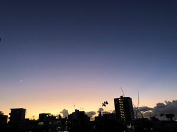

うるがいの話 ある日
最新: 抜歯【うるがいの話 ある日】とは 一日だけのプログです
『うるがいの話』の最新一日だけのプログで、通信料が少なく経済的だ。カニの画像をクリックすると全ての日付が載る『うるがいの話』サイトを表示します
|
|
【うるがいの話】 うるがい(ｳﾙｶﾞｲ urugai)とは、『もずくがに』の名前でとても大きくなります。 |
|---|---|
|
|
【カミマヤーの話】 猫のことを方言でマヤーといいます。カミマヤーとは、神の猫のことです。 |
|
【タナガーの話】 たながー（ﾀﾅｶﾞｰtanagaa）とは手長えびのことで、何種類かあり大きいのは車 エビぐらいになります。 |

|
【ぶながぁの話】 ぶながー(bunagaa)とは、赤い髪の毛、赤い身体、そして身長は１ｍ２０ｃｍ ぐらい、川の蟹を食べているの目撃された。場所は沖縄県国頭郡大宜味村のと ある村僕の隣近所に住んでいる爺さんから、聞いた話です。 |
|
|
【ギーマの話】 ギーマ(giima)とは、山原の里山に咲くスズランに似た、 花を付けます。実は食べられます、 気が付くと口の周りが紫になっています。 |
2021年12月07日 (火）抜歯
16:13

まだコロナ禍になる前、もらった蟹を食べた後からか右奥歯の近くに、甲羅の
欠片が刺さったような感じがあった。ただ、痛みもないのでコロナ禍もあった
ので歯医者へは行かなかった。やっとコロナも収まってきたので、欠片を取っ
てもらおう、ものの１０分で済むだろうと勇んで行く。やっと、あのいまいま
しい欠片から解放される。診察で甲羅の欠片を取って欲しいとお願いする、看
護師さんが、それではと見始める。レントゲン撮りましょうと・・・・、おや
何か雲行きが怪しい、そして歯医者のナガドさんが『神経の無い歯が、縦に割
れています！』、どうやらその裂けた歯を甲羅の欠片と勘違いしたようだ。結
局、裂けてしまったその歯を抜歯する。おおお、なんという事だ。右奥の下に
ぽっかりと穴が出来てしまった。放置してしているといづれはばい菌でえらい
事になることのようなので、ま、いいか。しかし、この状態でよく歯が痛くな
らなかったと驚く。
１６時１１分 ビットコインの総資産 ￥１６，８４５
前日より千円上がっている